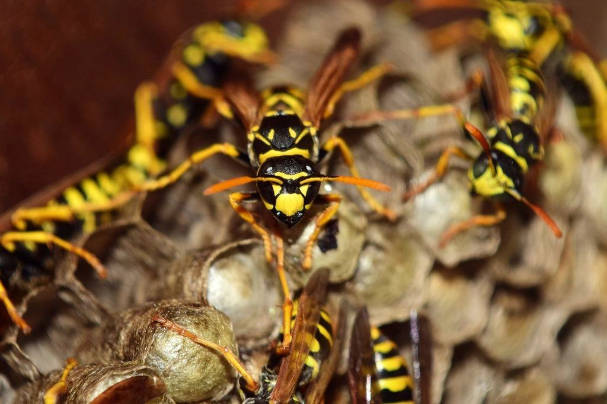

Tjänster
I dag är vi sex anställda och har 74 producenter på avtal, från fäbodar i Oviken till bryggerier på Frösön och renslakterier i Härjedalen. Ungefär hälften är certifierade enligt IP Livsmedel eller KRAV, och vi har inte haft en enda avvikelse på skadedjursavsnittet vid deras revisioner sedan 2021.
Vad tillverkar ni?

Mejeri och ost
I ett ystningsrum får man inte ställa vad som helst på golvet. Vi använder rostfria stationer som tål högtryckstvätt och placerar dem utanför produktionszonerna.
Lagringskällare kontrolleras för ostkvalster två gånger per år.

Dryck och bryggeri
Spannmål, socker och fukt är en inbjudan till både möss och insekter. Vi går igenom hela flödet från maltleverans till färdig flaska.
Sju av länets elva mikrobryggerier har avtal med oss.

Kött, vilt och ren
Slakterier och styckerier har höga krav på flugkontroll under sommaren. UV-fällorna töms och räknas vid varje besök, och fångsten förs in i en trendkurva.
Vi följer renskötselns säsonger med extra besök under slakten i september.

Revision och dokumentation
Den som tillverkar 300 ostar i veckan har inte tid att sammanställa fällrapporter. Vi levererar en uppdaterad pärm och en digital kopia efter varje besök.
Inför en certifieringsrevision gör vi en extra genomgång utan kostnad.
Från rundvandring till revision
- 1

Rundvandring
Vi går igenom hela anläggningen med den som är ansvarig för produktionen, från lastdörr till kylrum.
- 2

Riskanalys och karta
Inom en vecka får ni en skriftlig riskanalys och en karta över var varje station och fälla sitter.
- 3

Löpande besök
Teknikern kontrollerar, tömmer och för in fångsten i en trendrapport vid varje besök.
- 4

Årsgenomgång
En gång per år går vi igenom trender och uppdaterar riskanalysen inför nästa revision.
Vi kan livsmedelsreglerna
- Behörighet för gnagar- och insektsmedelTeknikerna har Kemikalieinspektionens behörighet för yrkesmässig användning av gnagar- och insektsmedel.
- Utbildade i HACCPHela personalen har gått utbildning i faroanalys och egenkontroll för livsmedelsföretag.
- Kända av certifieringsorganenVåra rapporter följer kraven i IP Livsmedel, KRAV och BRC Global Standard for Food Safety.
- Hygienrutiner på platsEngångsoveraller, skoskydd och hårnät vid varje besök i produktionsrum.